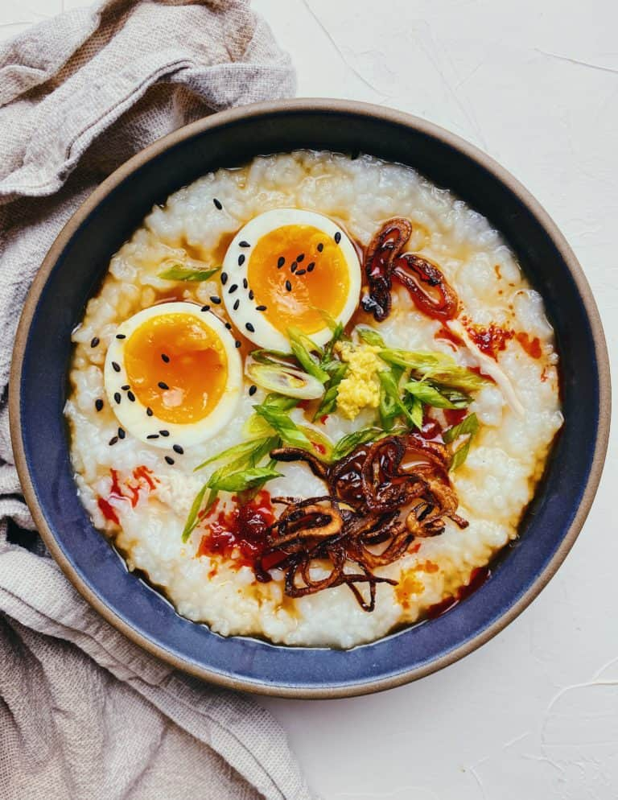
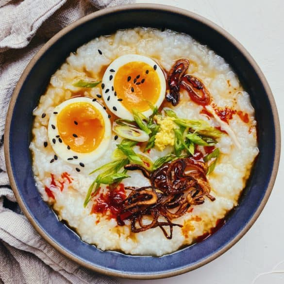

Cable knit sweater feels in chicken congee form. This chicken congee recipe is one of those foods that is an absolute cure-all. Feeling sick? Eat congee. In need of something nourishing? Eat congee. New mom? Eat congee–you get the picture.
If you’re a lover of all-things soup like I am, then you’ll have to try my Thai Chicken and Rice and Creamy Mushroom Soup recipes, next!
Congee, known as Chinese rice porridge comfort food, is a dish typically eaten at breakfast, but holds up anytime of the day. It’s made by slow simmering a small amount of rice in a large quantity of water or broth, creating a thick, starchy batch of comforting goodness.
Growing up, I ate a variety of porridge, most often lugaw, a Filipino version made with garlic, ginger, rice, chicken, and topped with fish sauce, scallions, chicharron, and calamansi juice.
When making congee you can slow simmer the rice with just water, but if you’re aiming for richness in flavor, I suggest boiling the chicken for 40 mins with scallions, garlic and ginger to get a well-seasoned broth (sharing the specifics below).
Conversely, you can just use bone broth, but I prefer the scratch-made way.
The cherry-on-top to congee are the add-ons:
Congee without all the fixin’s is great, but topped with all the extras ALWAYS makes it taste so much better
Broken rice–fragments of rice grains that occur during processing–is typically used to make congee, but I like to use sushi rice. It’s a short grain varietal of rice and higher in starch. You want to aim for short-grain vs long-grain rice, as short grain rice absorbs more water, causing a gelation effect compared to long-grain rice, which doesn’t absorb as much water when soaked or cooked.
Think of when you try cooking sushi, short or medium-grain rice and you’ll notice it’s stickier vs when cooking jasmine, basmati or long-grain rice. This is because of the starches and they’re levels of permeability to water–more absorbent. Starchier and more amylopectin for short-grain rice and less absorbent for long grain rice (more amylose).
What am I getting at here? Basically, use sushi rice when making congee and you’ll be good to go.
These are just a few of our favorites:
We’re huge fans of congee and glad you love it, too! Leave a comment and share your love for this recipe on Instagram and Pinterest. We love to see you get down in the kitchen. Happy eating!
Cable knit sweater feels in chicken congee form. This chicken congee recipe is one of those foods that is an absolute cure-all. Feeling sick? Eat congee. In need of something nourishing? Eat congee. New mom? Eat congee–you get the picture.